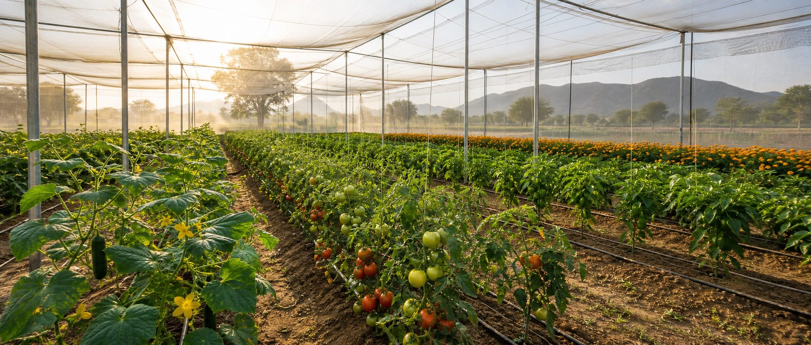

Net House Setup
Site selection, structure planning, material guidance, layout, shade-net decisions and stage-wise execution support.

Net house farming consultancy in Rajasthan
From net house setup to crop planning, irrigation, fertilizers, pest management, harvesting, marketing and finance planning, KhetiWithYogi helps farmers build practical, profitable protected cultivation systems.
Local, field-tested advice
KhetiWithYogi supports growers who want better crop quality, controlled cultivation, efficient water use and a stronger route to market. The approach is practical: first understand the land, water, crop goal and budget, then plan the next steps with clear field execution.
What we help with
Site selection, structure planning, material guidance, layout, shade-net decisions and stage-wise execution support.
Crop selection, seed and sapling sourcing, spacing, transplant timing and production calendars for local conditions.
Drip irrigation, fertigation, water management, fertilizer schedules and practical correction plans.
Preventive monitoring, pesticide and medicine guidance, crop hygiene, plant health routines and recovery actions.
Crop experience
The consultancy is based on hands-on cultivation experience with cucumber, tomato, broccoli, cauliflower, capsicum, bell pepper, bottle gourd, marigold, strawberry, coriander and similar protected crops.
Explore crop expertiseHow consulting works
Ajmer region consultancy